What was holding back i1cleaner.com, and how the new site fixes it: a page-by-page comparison of the current Wix site and the proposed Next.js rebuild.
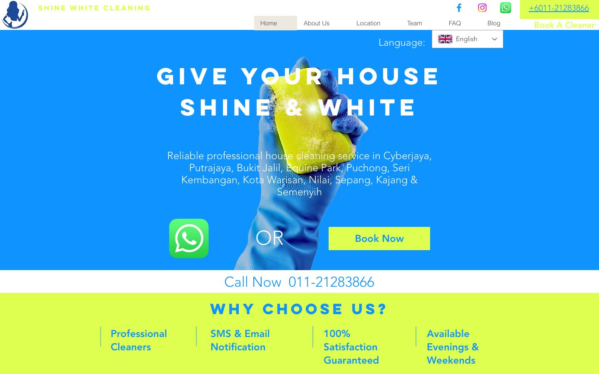
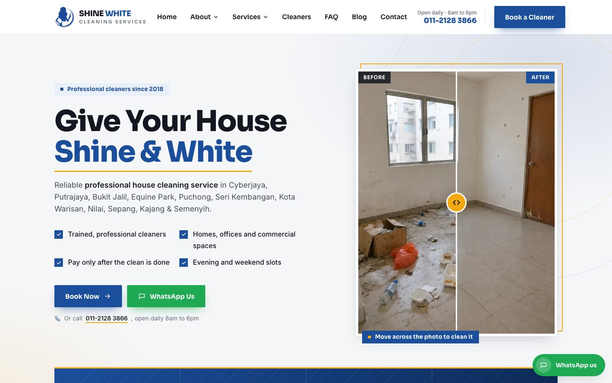
Every page, section and piece of copy on the current site is carried over. The rebuild fixes the mistakes below, makes each page faster and clearer, and adds three things the current site cannot do: let customers pick their own cleaner, show real before-and-after results, and keep old Google links working.
| Area | Main problems on the current site | Findings | |
|---|---|---|---|
| 1 | Content | Wrong city on the Putrajaya page, a leftover “copy-of” page, copy-paste errors in the service-area list, contradicting payment and email details, typos. | 10 |
| 2 | Structure | Inconsistent URLs, 11 pages with no main heading, dead-end service pages, no way to choose a cleaner. | 6 |
| 3 | Search (SEO) | Keyword-stuffed titles, duplicated titles, broken business data for Google, keyword-stuffed image descriptions. | 7 |
| 4 | Design & speed | Heavy pages, off-brand clashing colours, no proof of results, weak keyboard accessibility. | 6 |
| Feature | What it does | |
|---|---|---|
| + | Cleaners page | All 26 cleaners from the Setmore account, each linking straight to their own booking page. |
| + | Before/after swipe | Move across a photo to wipe it from dirty to clean. Works with mouse, finger and keyboard. |
| + | Number counter | Key figures count up as the visitor scrolls to them. |
| + | Old link redirects | All nine old service and location addresses forward to their new page, so Google rankings carry over. |
| + | WhatsApp everywhere | A WhatsApp button on every page, and a job application form that sends straight to WhatsApp. |
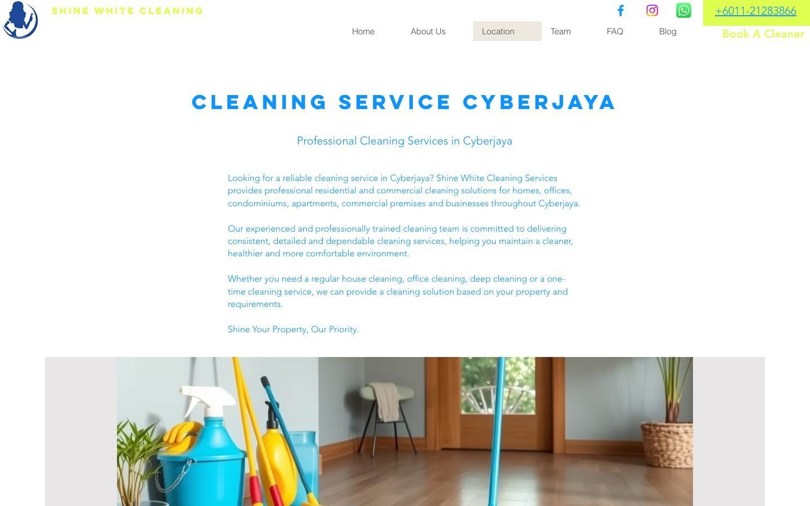
/putrajaya the heading reads “Cleaning Service Cyberjaya” and every paragraph says Cyberjaya. The page was copied and never edited.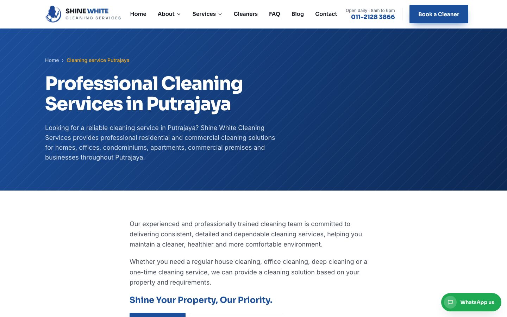
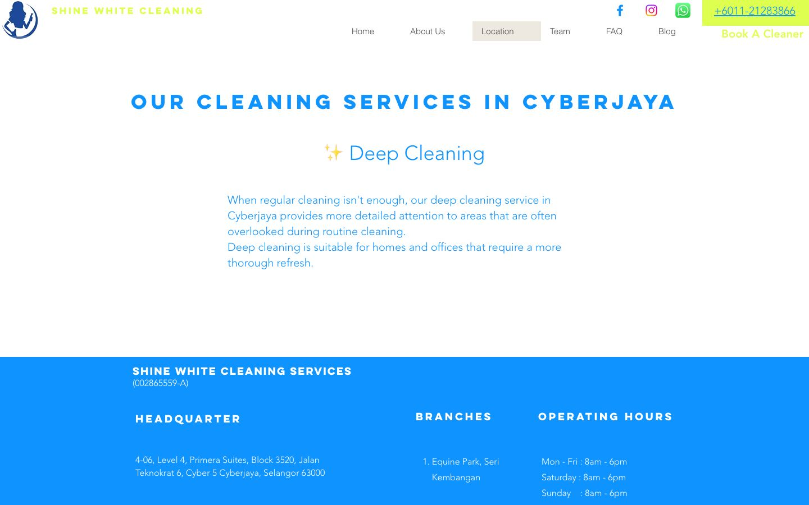
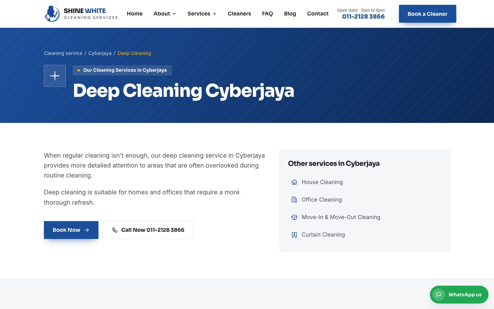
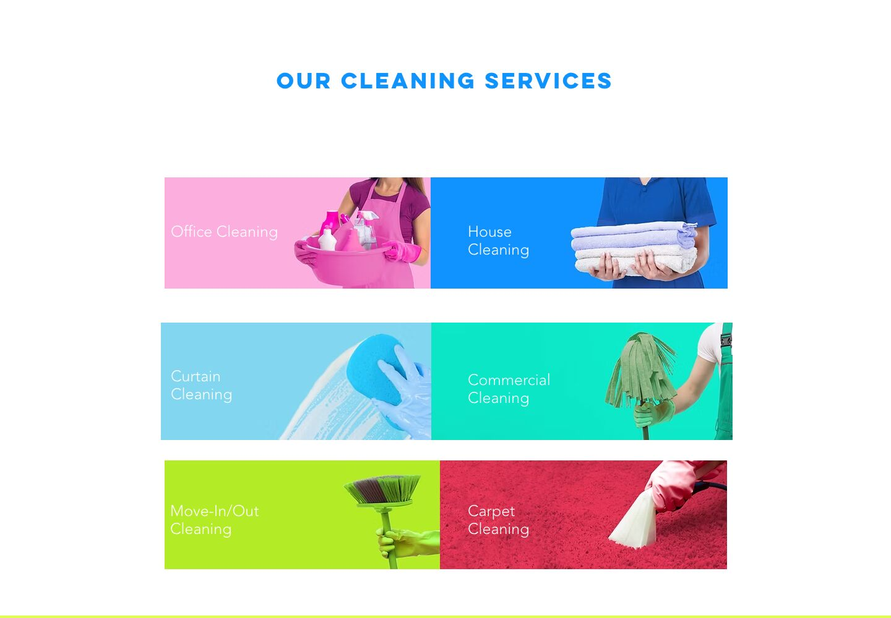
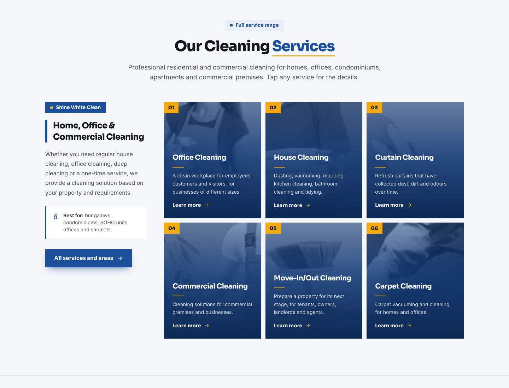
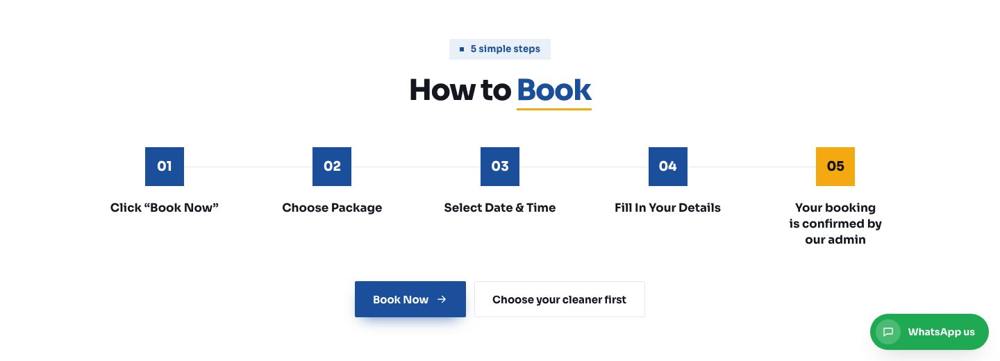
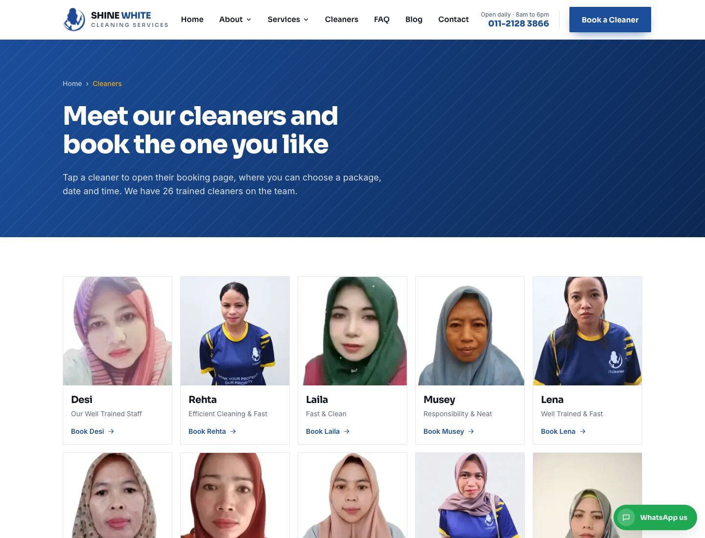
The Team page used to say “Cleaners” with nothing under it. The new /cleaners page shows all 26 cleaners from the Setmore account with photo, name and tagline.
Tapping a cleaner opens their own Setmore booking page. For example, Desi opens shinewhite.setmore.com/team/cyfI0H9W…. Every “Book a Cleaner” button on the site now leads here.
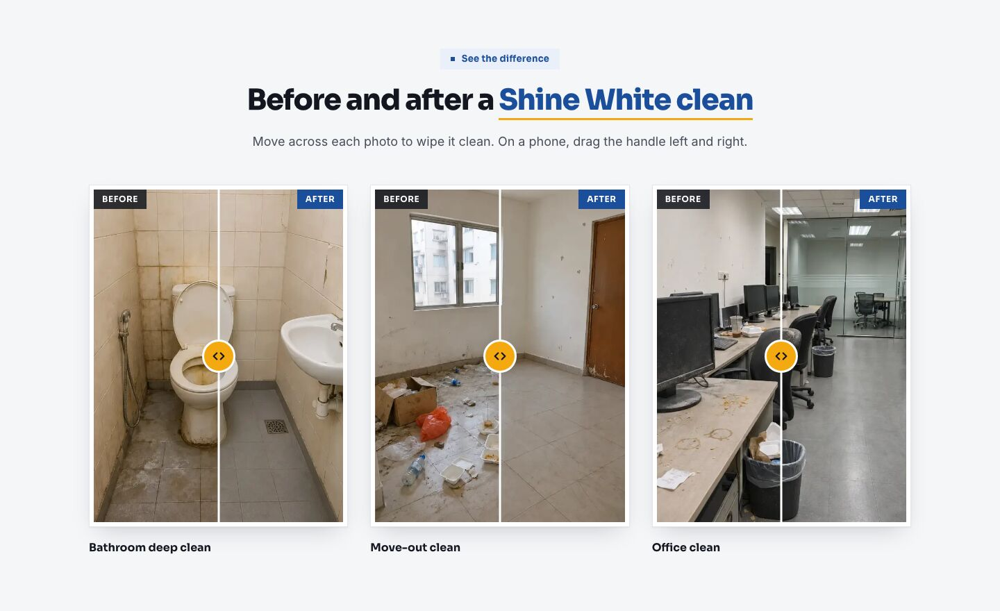
The three before/after photos were split into separate images. Moving across a photo wipes it from dirty to clean.
It appears on the homepage, the services overview and every service page. The homepage version plays one sweep on load to show it can be moved.
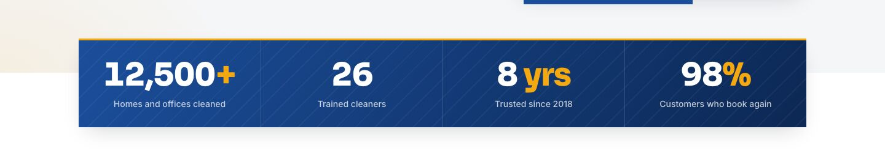
The figures count up from zero when the visitor scrolls to them.
| Mistake on the current site | Fix | |
|---|---|---|
| 1.1 | Homepage headline typed as “Give Your HoUSE Shine & WHITE”. | “Give Your House Shine & White”. |
| 1.2 | /putrajaya is headed “Cleaning Service CYBERJAYA” and talks about Cyberjaya. | Location pages come from one template, so the place name is always right. |
| 1.3 | A leftover duplicate page is live at /copy-of-house-cleaning-service-cyberjaya. | Removed. The address forwards to the Cyberjaya page. |
| 1.4 | Service-area list has copy-paste errors: Nilai lists Puchong services, entries repeat, 16 Sierra has no Deep Cleaning. | Generated from one list of areas and one list of services, so every area shows the same five services once. |
| 1.5 | FAQ says “We only accept cash”; the policy on the same page says “cash/bank transfer”. | FAQ now says cash or bank transfer. To confirm. |
| 1.6 | Footer shows info@i1cleaner.com but the link opens shinewhite88@outlook.com. | One address everywhere: info@i1cleaner.com. To confirm. |
| 1.7 | Typos: “Your Booking will Confirmed”, “Whatapps Us Now!!!”, “Customise d House Cleaning Package”, “we are happily help you”, “Can i request…”. | Corrected without changing the meaning. |
| 1.8 | Team blurbs inconsistent; every card has a “Read More” button that leads nowhere useful. | Blurbs tidied; dead buttons removed. |
| 1.9 | Footer still links to Google+, which shut down in 2019. | Removed. Facebook, Instagram and Yelp kept. |
| 1.10 | Three different Facebook addresses used across the page. | One: facebook.com/i1cleaner. |
| Mistake on the current site | Fix | |
|---|---|---|
| 2.1 | Hard-to-read, inconsistent URLs such as /move-inmove-outcleaningcyberjaya; two different pages called “cleaning service cyberjaya”. | One pattern: /cleaning-service/<area>/<service>. |
| 2.2 | Putrajaya only has a House Cleaning page. | Cyberjaya and Putrajaya both have all five service pages. |
| 2.3 | 11 of 15 pages have no main heading; Contact’s is “HEADQUARTER”. | Every page has one clear main heading. |
| 2.4 | No way to see or choose a cleaner. | New Cleaners page with direct booking links. |
| 2.5 | Service pages are one paragraph and a button. | Included tasks, related services, booking options and before/after photos on each. |
| 2.6 | Phone number and booking button easy to lose on a phone. | Sticky header with Book a Cleaner, tap-to-call, and a WhatsApp button on every page. |
| Mistake on the current site | Fix | |
|---|---|---|
| 3.1 | Titles are keyword lists, e.g. Contact: “Contact Us | Shine White Cleaning | Malaysia | 16 sierra | presint | precint”. | Clear titles: “Contact Us | Shine White Cleaning Services”. |
| 3.2 | Curtain Cleaning page titled “Cleaning Service Cyberjaya”, the same as two other pages. | A unique title per page, e.g. “Curtain Cleaning Cyberjaya”. |
| 3.3 | Team description is “Join us now.”; the Blog description is three drafts pasted together. | One written description per page. |
| 3.4 | Homepage has three overlapping blocks of business data for Google, one pointing to images that do not exist. Other pages have none. | One correct business block on every page (address, phone, hours, areas), plus FAQ data on the FAQ page. |
| 3.5 | Image descriptions stuffed with keywords; five client logos all called “customer cleaning”; 3–7 images per page with none. | Every image has a plain description; logos use the client’s name. |
| 3.6 | Uses the keywords tag, which Google ignores. | Dropped. |
| 3.7 | No plan for keeping old links working after a rebuild. | All nine old addresses permanently forward to their new page. Sitemap and robots file generated. |
| Mistake on the current site | Fix | |
|---|---|---|
| 4.1 | Each page sends 650 KB–1.09 MB of HTML and 65+ scripts before any image loads. | Pages are pre-built: 42–125 KB of HTML. Images served as WebP at the size each screen needs. |
| 4.2 | Clashing pink, lime and red tiles that have nothing to do with the brand. | One palette from the logo: brand blue with a gold accent. Matching photo cards. |
| 4.3 | Nothing shows what a clean looks like. | Before/after swipe section with real photos. |
| 4.4 | FAQ is a script-heavy widget; the FAQ page is the heaviest at 1.09 MB. | Simple expand/collapse that works without JavaScript. |
| 4.5 | Weak keyboard focus styles. | Visible focus ring, “Skip to content” link, large tap targets, reduced-motion support. |
| 4.6 | Booking links mix http:// and https://. | All https://. |
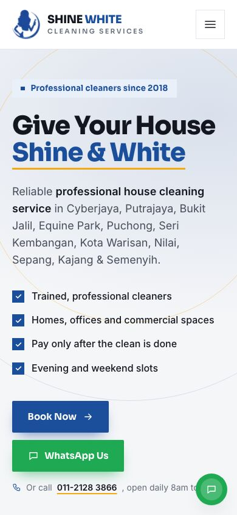
/ms, /zh) are not rebuilt yet.The same business and content, presented so visitors trust it in seconds and can book the cleaner they want in two taps.